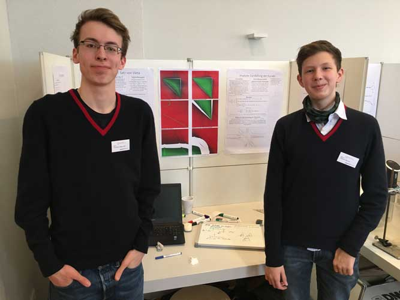
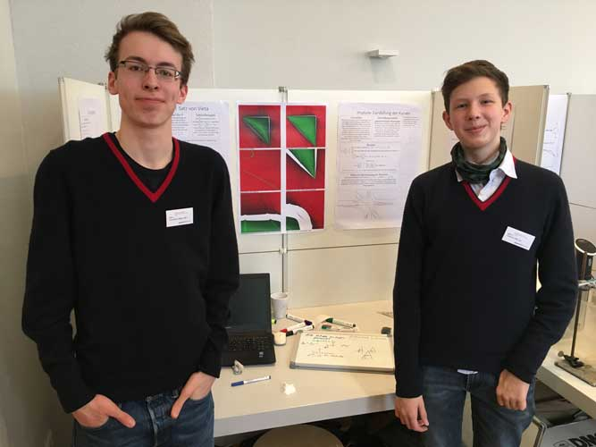

Schüler feiern Erfolge als Forscher und Tüftler
Das hervorragende Abschneiden der plus-MINT Schüler aus Louisenlund belegt die hohe Qualität der MINT-Bildung und die gute Wettbewerbsarbeit an der Schule. Der naturwissenschaftlich-technisch begeisterte Nachwuchs hat seine Fähigkeiten und Talente eindrucksvoll gezeigt. Die erzielten Leistungen der Louisenlunder MINT-Talente können sich sehen lassen – in diesem und schon im vergangenen Jahr.
Welche Erfolge die Mädchen und Jungen erzielt haben, könnt Ihr hier lesen.
https://www.louisenlund.de/blog/schueler-feiern-erfolge-als-forscher-und-tueftler/